Workshop 2 - Animal model
Sylvain SCHMITT
2019-12-18
Introduction
Setup
## used (Mb) gc trigger (Mb) max used (Mb)
## Ncells 460922 24.7 996122 53.2 641594 34.3
## Vcells 883665 6.8 8388608 64.0 1752615 13.4A Phenotype
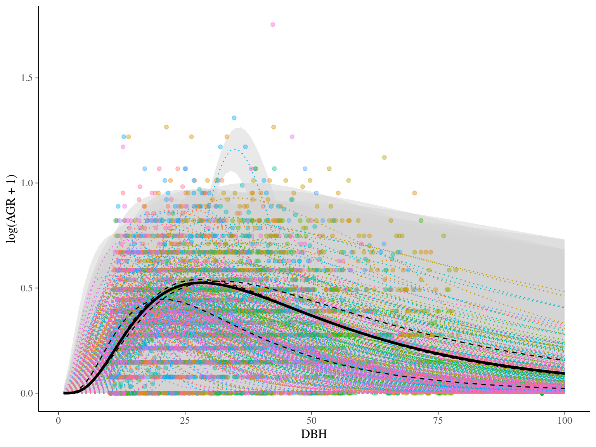
A Kinship matrix
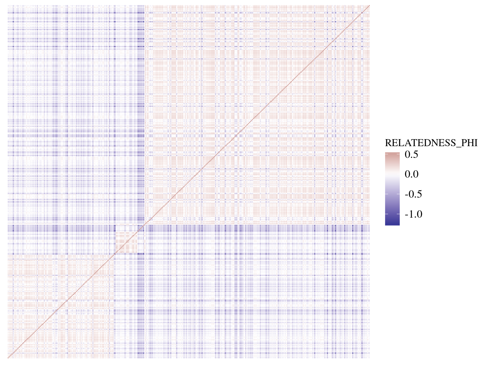
Genetic variance
How much of my phenotype is explained by genetic ?
Maths
Animal model
\[y \sim \mathcal N(\mu + u, \sigma_E)\]
\[u \sim \mathcal{MVN}_N(0, \sigma_GK)\]
\[\sigma_P = \sigma_G + \sigma_E\]
- \(y\) vector of \(N\) individuals phenotypes
- \(\sigma_P\) the phenotypic variance
- \(\mu\) the mean phenotype
- \(K\) matrix of \(N\times N\) between-individuals kinship
- \(u\) vector of \(N\) random effects of individual kinship
- \(\sigma_G\) phenotypic variance explained by genetic
- \(\sigma_E\) residual phenotypic variance unexplained by genetic
Multivaraite normal distribution

Multivaraite normal - PDF
\(\mathcal{MVN}_N(\mu,\Sigma)\)
If \(\Sigma\) is positive-definite, MVN is “non-degenerate”
\[f(x\mid\mu,\Sigma) = \frac{exp(-\frac 12 (x-\mu)^T\Sigma^{-1}(x-\mu))}{\sqrt{(2\pi)^kdet(\Sigma)}}\]
Multivariate normal - Normal random vector
\[X \sim \mathcal{MVN}(\mu,\Sigma) \iff\]
\[\exists \mu \in \mathbb R^k, A\in\mathbb R^{k\times l}\]
\[\mid X = AZ+\mu ~for~Z_n \sim \mathcal N(0,1), i.i.d\]
\[resulting~in~\Sigma=AA^T\]
Multivariate normal - Cholesky decomposition
If \(\Sigma\) is positive-definite
\(\Sigma=AA^T\)
And \(A\) is the Cholesky decomposition of \(\Sigma\)
Cholesky decomposition is implemented in stan !
Back to the Animal model
\[X \sim \mathcal{MVN}(\mu,\Sigma) \iff X = AZ+\mu\mid Z_n \sim \mathcal N(0,1), i.i.d\]
\[u \sim \mathcal{MVN}_N(0, \sigma_GK) \iff \sigma_GA\tilde u \mid\tilde u \sim\mathcal N(0,1)\]
Resulting in:
\[y \sim \mathcal N(\mu + \sigma_GA\tilde u, \sigma_E)\]
\[\tilde u \sim \mathcal{N}_N(0, 1)\]
\[\sigma_P = \sigma_G + \sigma_E\]
with A the Cholesky decomposition of K
Back to the linear model
What about other informations on the individuals ?
\[\mu = \beta_0+\beta_1x_1+..+\beta_qx_q\]
\[\mu = \begin{bmatrix} \beta_0 \\ \beta_1 \\ ... \\ \beta_q \end{bmatrix} [1,x_1,...,x_q] = \beta X\]
\[y \sim \mathcal N(X \beta + u, \sigma_E)\]
To go further
Mathematically the Animal model is the basis of other genomic models including genomic structure throught genetic markers (i.e. SNPs). For instance Linear Mixed Models (LMM), used for major effet detection, or Bayesian Sparse Linear Model (BSLMM), used for polygenic structure inference, are based on the Animal model structure.
Linear Mixed Models - LMM
\[y \sim \mathcal N(\mu + x\beta + u, \sigma_E)\]
\[u \sim \mathcal{MVN}_N(0, \sigma_GK)\]
\[\sigma_P = \sigma_G + \sigma_E\]
with \(x\) one genetic marker and \(\beta\) its effect size on the phenotype
Basyesian Sparse Linear Mixed Models - BSLMM
\[y \sim \mathcal N(\mu + X\tilde \beta + u, \sigma_E)\]
\[u \sim \mathcal{MVN}_N(0, \sigma_bK)\]
\[\tilde \beta \sim \pi\mathcal{N}(0, \sigma_a) + (1-\pi)\delta_0\]
\[\sigma_P = \sigma_a + \sigma_b + \sigma_E\]
with \(X\) the matrix of genetic markers and \(\tilde \beta\) their sparse effects on the phenotype
Stan Univariate
Acknowledgements
Diogo Melo a Brazilian reasearcher from Sao Paulo who originally developed the stan code after a discussion on the stan forum
Data 1
- \(y\) vector of \(N\) individuals phenotypes
- \(K\) matrix of \(N\times N\) between-individuals kinship
data {
int<lower=0> N ; // # of individuals
real Y[N] ; // phenotype
cov_matrix[N] K ; // kinship covariance matrix
}Data 2
- \(y\) vector of \(N\) individuals phenotypes
- \(K\) matrix of \(N\times N\) between-individuals kinship
- \(X\) matrix of \(N\times J\) covariates
data {
int<lower=0> N ; // # of individuals
int<lower=0> J ; // # of covariates + 1 (intercept)
real Y[N] ; // phenotype
matrix[N,J] X ; // covariates
cov_matrix[N] K ; // kinship covariance matrix
}Transformed data
- \(\sigma_P\) the phenotypic variance
- \(u \sim \mathcal{MVN}_N(0, \sigma_GK) \iff \sigma_GA\tilde u \mid\tilde u \sim\mathcal N(0,1)\)
transformed data{
matrix[N, N] A ; // cholesky-decomposed kinship
real<lower=0> sigma ; // phenotypic variance
A = cholesky_decompose(K) ;
sigma = sd(Y) * sd(Y) ;
}Parameters 1
\[y \sim \mathcal N(\mu + \sigma_GA\tilde u, \sigma_E)\]
parameters {
vector[N] u_tilde ; // random effects / breeding values
real mu ; // intercept
simplex[2] part ; // variance partition
}Parameters 2
\[y \sim \mathcal N(\beta X + \sigma_GA\tilde u, \sigma_E)\]
parameters {
vector[N] u_tilde ; // random effects / breeding values
vector[J] beta; // fixed effects
simplex[2] part ; // variance partition
}Model 1
\[u \sim \mathcal{MVN}_N(0, \sigma_GK) \iff \sigma_GA\tilde u \mid\tilde u \sim\mathcal N(0,1)\]
\[y \sim \mathcal N(\mu + u, \sigma_E)\]
\[u \sim \mathcal{MVN}_N(0, \sigma_GK)\]
model {
vector[N] u ;
u_tilde ~ normal(0, 1) ; // priors
mu ~ normal(0, 1) ;
u = sqrt(sigma*part[1])*(A * u_tilde) ;
Y ~ normal(mu + u, sqrt(sigma*part[2]));
}Model 1 bis
\[y \sim \mathcal N(\mu + \sigma_GA\tilde u, \sigma_E)\]
\[\tilde u \sim \mathcal{N}_N(0, 1)\]
model {
u_tilde ~ normal(0, 1) ; // priors
mu ~ normal(0, 1) ;
Y ~ normal(mu + sqrt(sigma*part[1])*(A * u_tilde), sqrt(sigma*part[2]));
}Model 2
\[u \sim \mathcal{MVN}_N(0, \sigma_GK) \iff \sigma_GA\tilde u \mid\tilde u \sim\mathcal N(0,1)\]
\[y \sim \mathcal N(\beta X + u, \sigma_E)\]
\[u \sim \mathcal{MVN}_N(0, \sigma_GK)\]
model {
vector[N] u ;
vector[N] mu;
u_tilde ~ normal(0, 1) ; // priors
to_vector(beta) ~ normal(0, 1) ;
u = sqrt(sigma*part[1])*(A * u_tilde) ;
for(n in 1:N)
mu[n] = beta * X[n] + a[n] ;
Y ~ normal(mu, sqrt(sigma*part[2])) ;
}Model 2 bis
\[y \sim \mathcal N(X\beta + \sigma_GA\tilde u, \sigma_E)\]
\[\tilde u \sim \mathcal{N}_N(0, 1)\]
model {
u_tilde ~ normal(0, 1) ; // priors
beta ~ normal(0, 1) ;
Y ~ normal(X*beta + sqrt(sigma*part[1])*(A * u_tilde), sqrt(sigma*part[2])) ;
}Generated quantities
\[\sigma_P = \sigma_G + \sigma_E\]
generated quantities{
real sigmaE ; // residual variation
real sigmaG ; // genetic variation
sigmaE = sigma*part[2] ;
sigmaG = sigma*part[1] ;
}Full
data {
int<lower=0> N ; // # of individuals
real Y[N] ; // phenotype
cov_matrix[N] K ; // kinship covariance matrix
}
transformed data{
matrix[N, N] A ; // cholesky-decomposed kinship
real<lower=0> sigma ; // phenotypic variance
A = cholesky_decompose(K) ;
sigma = sd(Y) * sd(Y) ;
}
parameters {
vector[N] u_tilde ; // random effects / breeding values
real mu ; // intercept
simplex[2] part ; // variance partition
}
model {
u_tilde ~ normal(0, 1) ; // priors
mu ~ normal(0, 1) ;
Y ~ normal(mu + sqrt(sigma*part[1])*(A * u_tilde), sqrt(sigma*part[2]));
}
generated quantities{
real sigmaE ; // residual variation
real sigmaG ; // genetic variation
sigmaE = sigma*part[2] ;
sigmaG = sigma*part[1] ;
}R Univariate 1
Variances
Variances
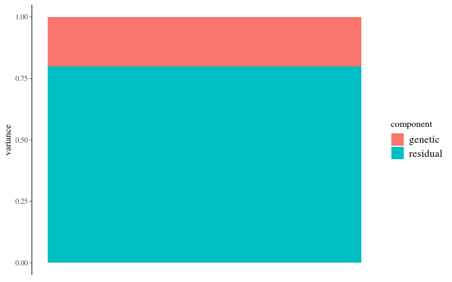
Kinship
ped <- read.table("https://raw.githubusercontent.com/diogro/QGcourse/master/tutorials/volesPED.txt", header = T)
inv.phylo <- MCMCglmm::inverseA(ped, scale = TRUE)
K <- solve(inv.phylo$Ainv)
K <- (K + t(K))/2
rownames(K) <- rownames(inv.phylo$Ainv)
K[K < 1e-10] = 0 # Not always exactly positive-definiteKinship
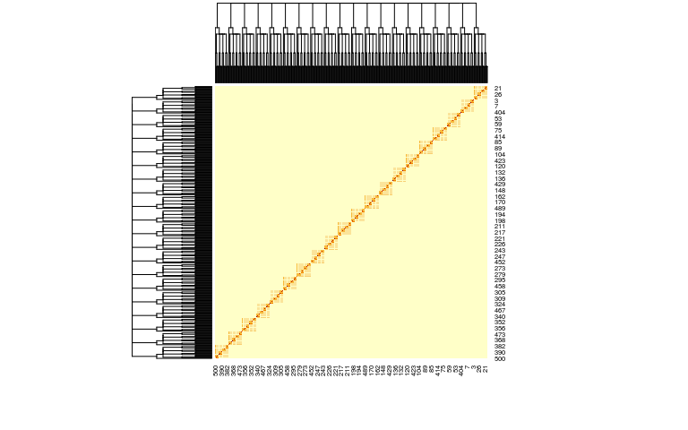
Breeding values
Breeding values
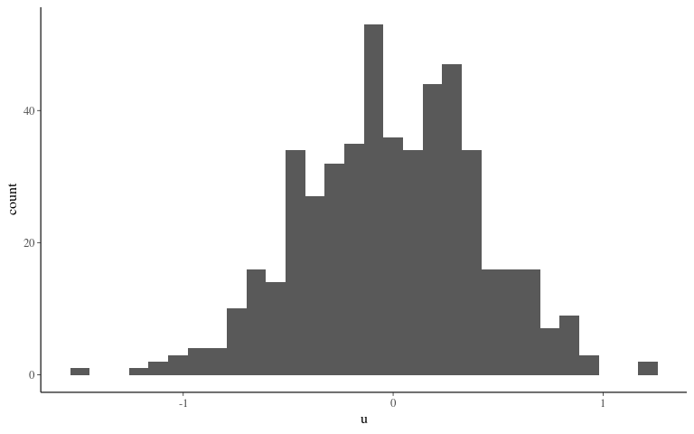
Intercept
## [1] -1.00489Noise
Noise
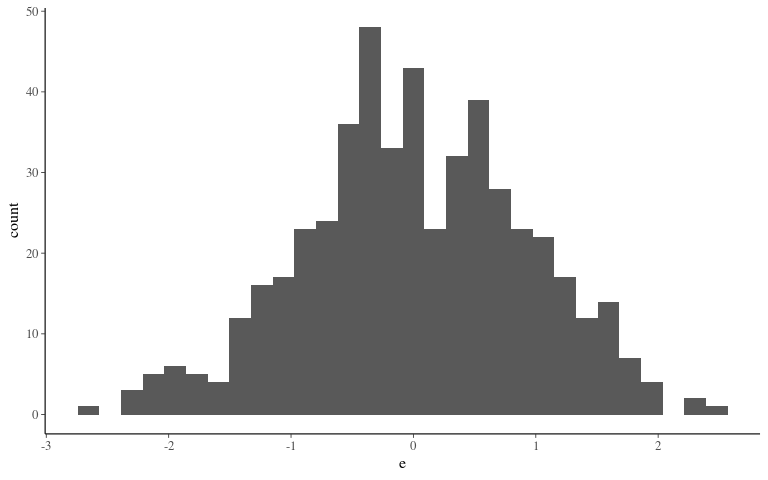
Phenotype
Phenotype
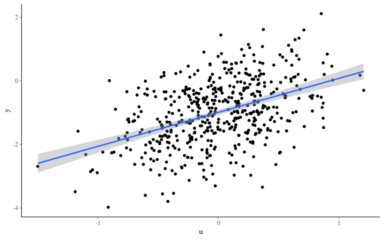
Inference 1
Convergence 1
## Registered S3 method overwritten by 'xts':
## method from
## as.zoo.xts zoo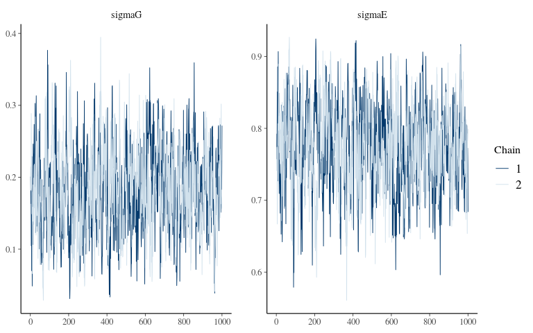
Posteriors 1
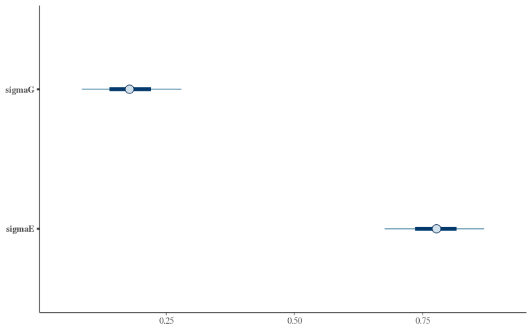
R Univariate 2
Covariates
Covariates
## `stat_bin()` using `bins = 30`. Pick better value with `binwidth`.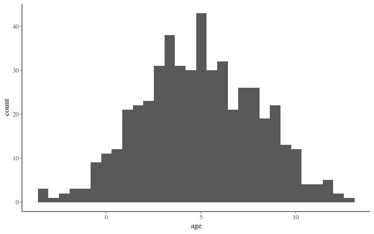
Phenotype 2
Phenotype 2
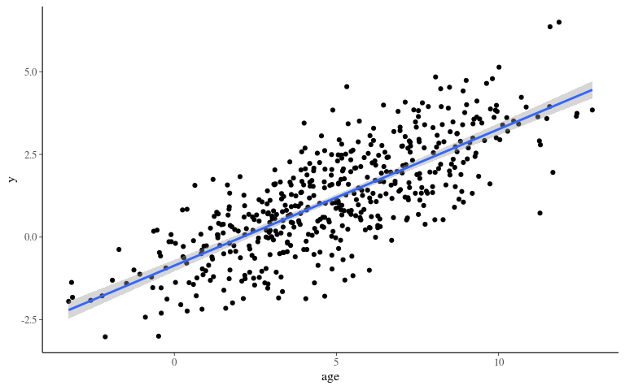
Inference 2
Convergence 2
## Registered S3 method overwritten by 'xts':
## method from
## as.zoo.xts zoo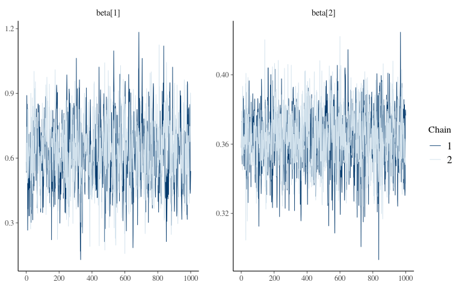
Posteriors 2
## Registered S3 method overwritten by 'xts':
## method from
## as.zoo.xts zoo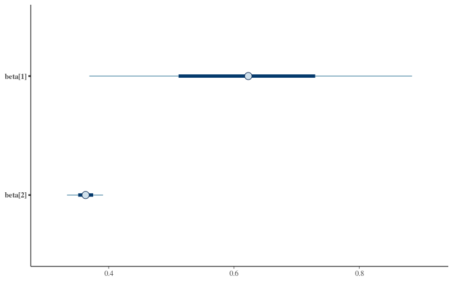